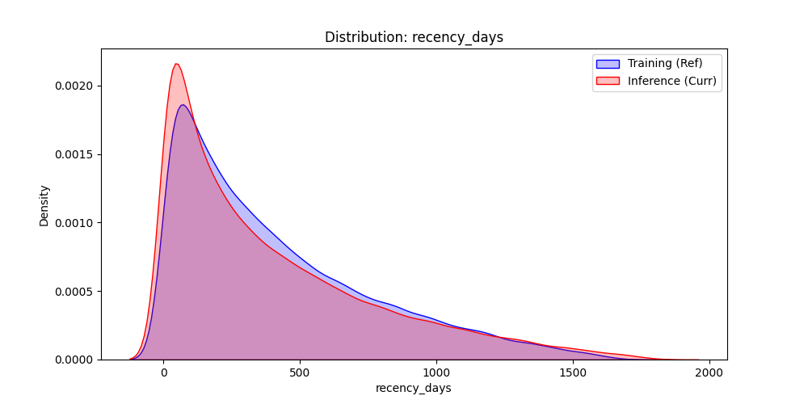
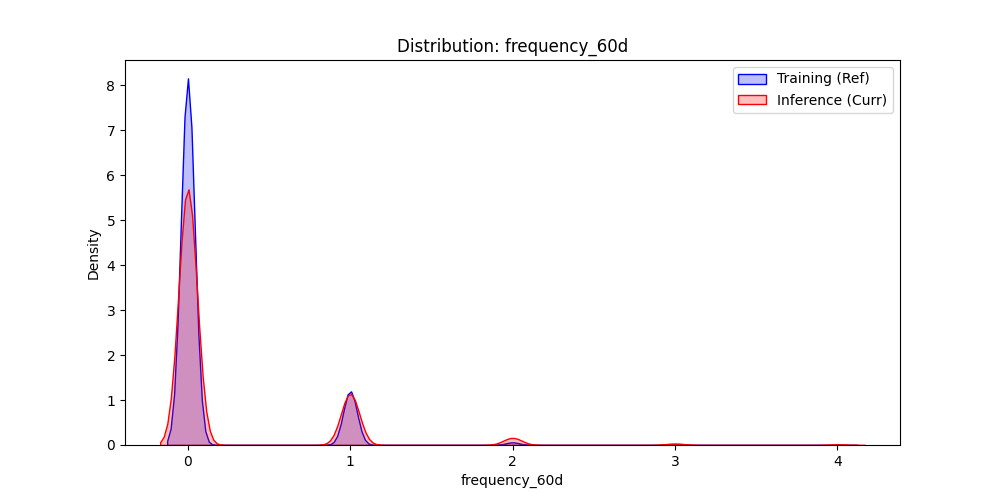
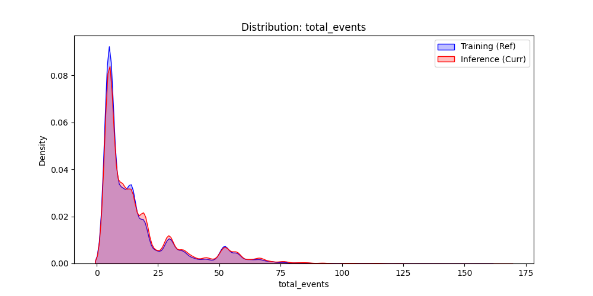
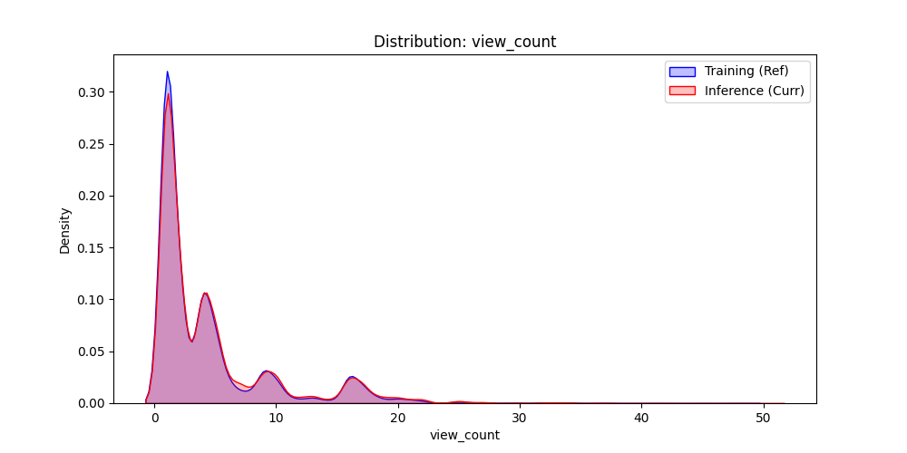

Training Rows: 49989 | Inference Rows: 65960
Train Mean: 413.94 | Current Mean: 398.18 | Shift: -3.8%
Train Mean: 0.14 | Current Mean: 0.23 | Shift: 61.5%
Train Mean: 16.12 | Current Mean: 17.30 | Shift: 7.3%
Train Mean: 4.27 | Current Mean: 4.58 | Shift: 7.4%
